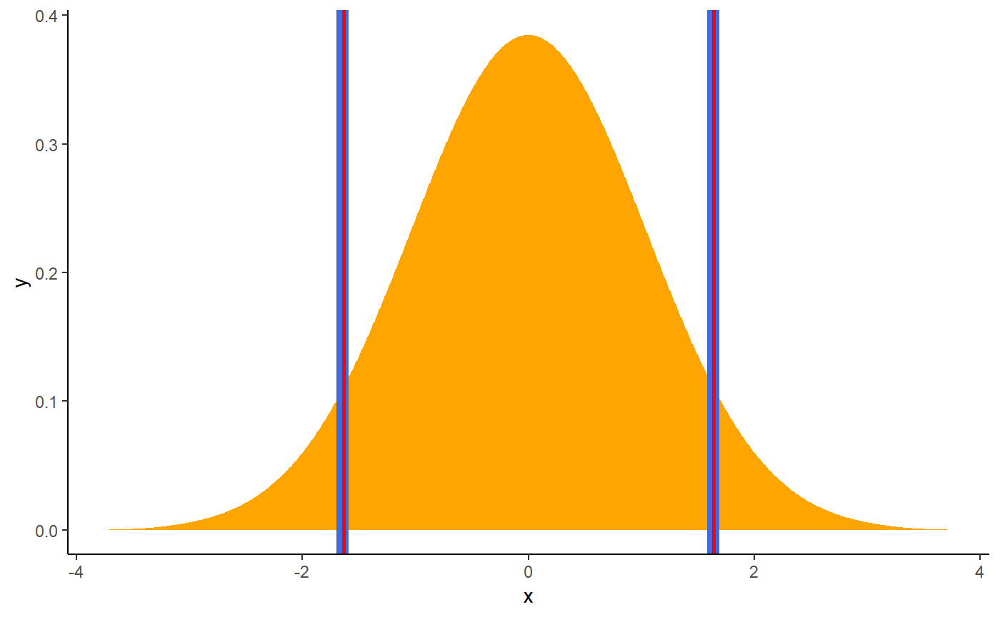
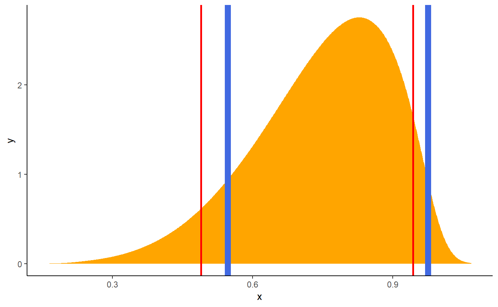
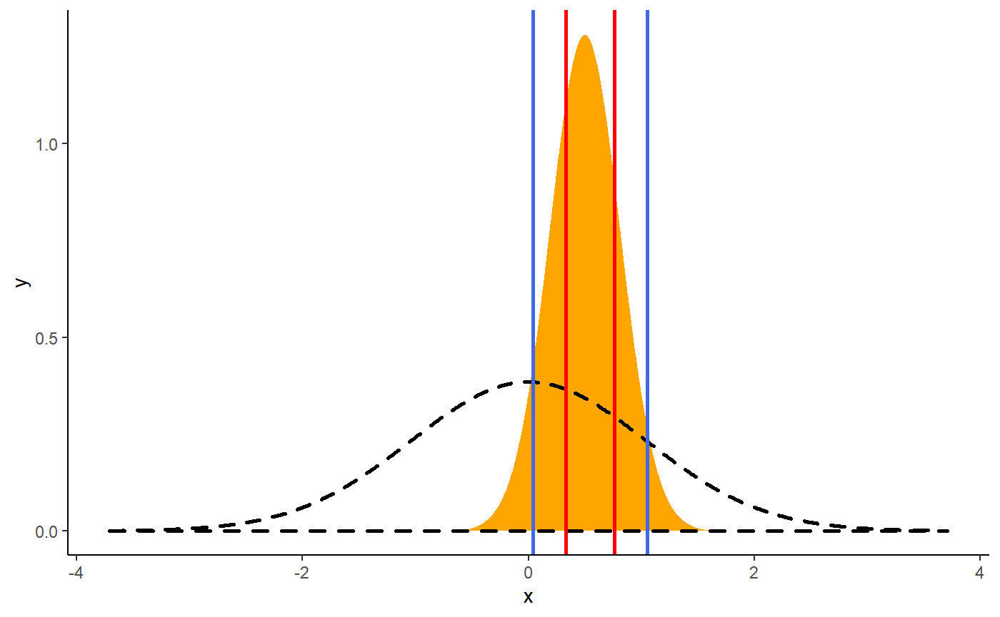

credible_interval.RmdThis vignette can be referred to by citing the package:
Credible intervals are an important concept in Bayesian statistics. Its core purpose is to describe and summarise the uncertainty related to your parameters. In this regards, it could appear as quite similar to the frequentist Confidence Intervals. However, while their goal is similar, their statistical definition annd meaning is very different. Indeed, while the latter is obtained through a complex algorithm full of rarely-tested assumptions and approximations, the credible intervals are fairly straightforward to compute.
As the Bayesian inference returns a distribution of possible effect values (the posterior), the credible interval is just the range containing a particular percentage of probable values. For instance, the 95% credible interval is simply the central portion of the posterior distribution that contains 95% of the values.
Note that this drastically improve the interpretability of the Bayesian interval compared to the frequentist one. Indeed, the Bayesian framework allows us to say “given the observed data, the effect has 95% probability of falling within this range”, while the frequentist less straightforward alternative (the 95% Confidence Interval) would be “there is a 95% probability that when computing a confidence interval from data of this sort, the effect falls within this range”.
Naturally, when it came about choosing the CI level to report by default, people started using 95%, the arbitrary convention used in the frequentist world. However, some authors suggested that 95% might not be the most apppropriate for Bayesian posterior distributions, potentially lacking stability if not enough posterior samples are drawn (Kruschke, 2014).
The proposition was to use 90% instead of 95%. However, recently, McElreath (2014, 2018) suggested that if we were to use arbitrary tresholds in the first place, why not use 89% as this value has the additional argument of being a prime number.
Thus, by default, the CIs are computed with 89% intervals (ci = 0.89), deemed to be more stable than, for instance, 95% intervals (Kruschke, 2014). An effective sample size (ESS; see here) of at least 10.000 is recommended if 95% intervals should be computed (Kruschke, 2014, p. 183ff). Moreover, 89 is the highest prime number that does not exceed the already unstable 95% threshold. What does it have to do with anything? Nothing, but it reminds us of the total arbitrarity of any of these conventions (McElreath, 2018).
The reader might notice that bayestestR provides two methods to compute credible intervals, the Highest Density Interval (HDI) (hdi()) and the Equal-tailed Interval (ETI) (eti()). These methods can also be changed via the method argument of the ci() function. What is the difference? Let’s see:
library(bayestestR)
library(dplyr)
library(ggplot2)
# Generate a normal distribution
posterior <- distribution_normal(1000)
# Compute HDI and ETI
ci_hdi <- ci(posterior, method = "HDI")
ci_eti <- ci(posterior, method = "ETI")
# Plot the distribution and add the limits of the two CIs
posterior %>%
estimate_density(extend=TRUE) %>%
ggplot(aes(x=x, y=y)) +
geom_area(fill="orange") +
theme_classic() +
# HDI in blue
geom_vline(xintercept=ci_hdi$CI_low, color="royalblue", size=3) +
geom_vline(xintercept=ci_hdi$CI_high, color="royalblue", size=3) +
# Quantile in red
geom_vline(xintercept=ci_eti$CI_low, color="red", size=1) +
geom_vline(xintercept=ci_eti$CI_high, color="red", size=1)
These are exactly the same…
But is it also the case for other types of distributions?
library(bayestestR)
library(dplyr)
library(ggplot2)
# Generate a beta distribution
posterior <- distribution_beta(1000, 6, 2)
# Compute HDI and Quantile CI
ci_hdi <- ci(posterior, method = "HDI")
ci_eti <- ci(posterior, method = "ETI")
# Plot the distribution and add the limits of the two CIs
posterior %>%
estimate_density(extend=TRUE) %>%
ggplot(aes(x=x, y=y)) +
geom_area(fill="orange") +
theme_classic() +
# HDI in blue
geom_vline(xintercept=ci_hdi$CI_low, color="royalblue", size=3) +
geom_vline(xintercept=ci_hdi$CI_high, color="royalblue", size=3) +
# Quantile in red
geom_vline(xintercept=ci_eti$CI_low, color="red", size=1) +
geom_vline(xintercept=ci_eti$CI_high, color="red", size=1)
The difference is strong with this one.
Contrary to the HDI, for which all points within the interval have a higher probability density than points outside the interval, the ETI is equal-tailed. This means that a 90% interval has 5% of the distribution on either side of its limits. It indicates the 5th percentile and the 95th percentile. In symmetric distributions, the two methods of computing credible intervals, the ETI and the HDI, return similar results.
This is not the case for skewed distributions. Indeed, it is possible that parameter values in the ETI have lower credibility (are less probable) than parameter values outside the ETI. This property seems undesirable as a summary of the credible values in a distribution.
On the other hand, the ETI range does change when transformations are applied to the distribution (for instance, for a log odds scale to probabilities): the lower and higher bounds of the transformed distribution will correspond to the transformed lower and higher bounds of the original distribution. On the contrary, applying transformations to the distribution will change the resulting HDI.
Unlike the HDI and the ETI, which look at the posterior distribution, the Support Interval (SI) provides information regarding the change in the credability of values from the prior to the posterior - in other words, it indicates which values of a parameter are have gained support by the observed data by some factor greater or equal to k (Wagenmakers, Gronau, Dablander, & Etz, 2018).
prior <- distribution_normal(1000, mean = 0, sd = 1)
posterior <- distribution_normal(1000, mean = .5, sd = .3)
si_1 <- si(posterior, prior, BF = 1)
si_3 <- si(posterior, prior, BF = 3)
ggplot(mapping = aes(x=x, y=y)) +
theme_classic() +
# The posterior
geom_area(fill = "orange",
data = estimate_density(posterior, extend = TRUE)) +
# The prior
geom_area(color = "black", fill = NA, size = 1, linetype = "dashed",
data = estimate_density(prior, extend = TRUE)) +
# BF = 1 SI in blue
geom_vline(xintercept=si_1$CI_low, color="royalblue", size=1) +
geom_vline(xintercept=si_1$CI_high, color="royalblue", size=1) +
# BF = 3 SI in red
geom_vline(xintercept=si_3$CI_low, color="red", size=1) +
geom_vline(xintercept=si_3$CI_high, color="red", size=1)
Between the blue lines are values the recived some support by the data (this is a BF = 1 SI), which received at least “moderate” support from the data.
From the presepctive of the Savage-Dickey Bayes factor, testing against a point null hypothesis for any value within the support interval will yeild a Bayes factor smaller than 1/BF.
Kruschke, J. (2014). Doing bayesian data analysis: A tutorial with r, jags, and stan. Academic Press.
McElreath, R. (2018). Statistical rethinking: A bayesian course with examples in r and stan. Chapman; Hall/CRC.
Wagenmakers, E.-J., Gronau, Q. F., Dablander, F., & Etz, A. (2018). The support interval. https://doi.org/10.31234/osf.io/zwnxb